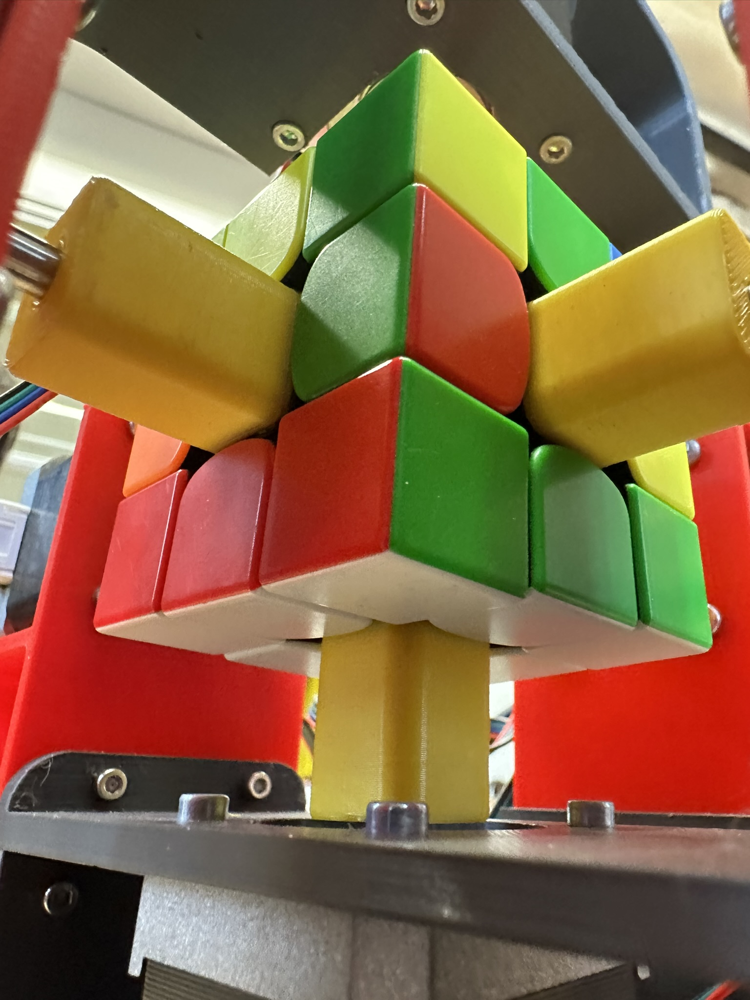

Rubik's Cube Solver Robot
Media
Op deze pagina zijn nog meer foto's en video's van de robot te zien.
Belangrijke links:
Github: RubiksCubeSolver
Google Drive: Fusion 360 files + STLs
Contact
Als je vragen of opmerkingen hebt over ons project:
Jonas: stotterspam@gmail.com
Anuar: anuar.behari@coderclass.nl
Robot met power supply beschermer
Verbinding van de cube aan de robot